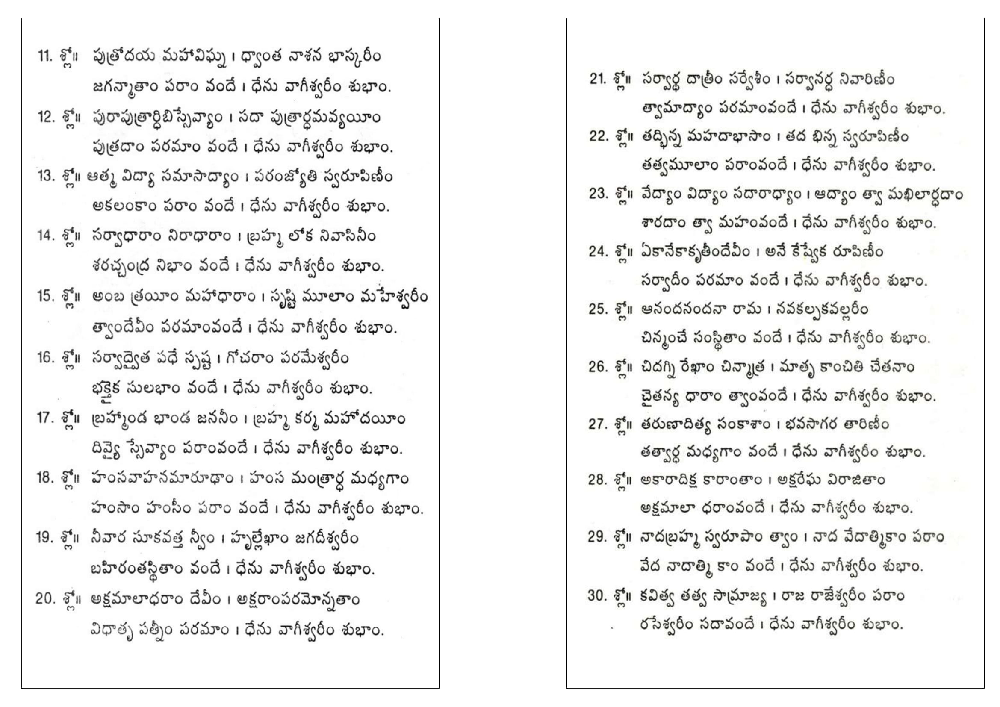
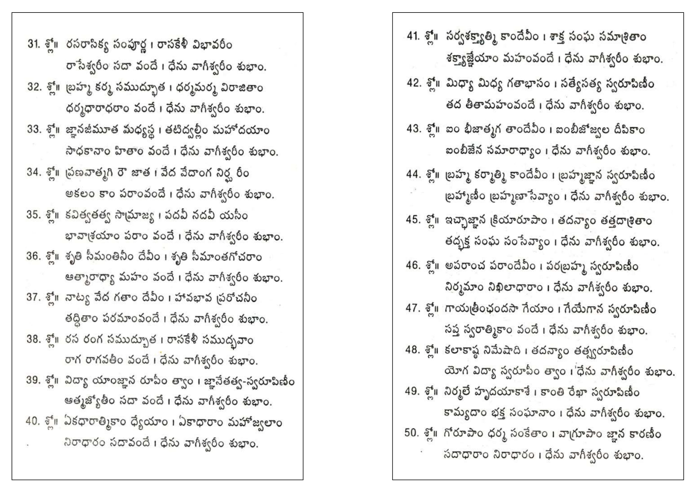
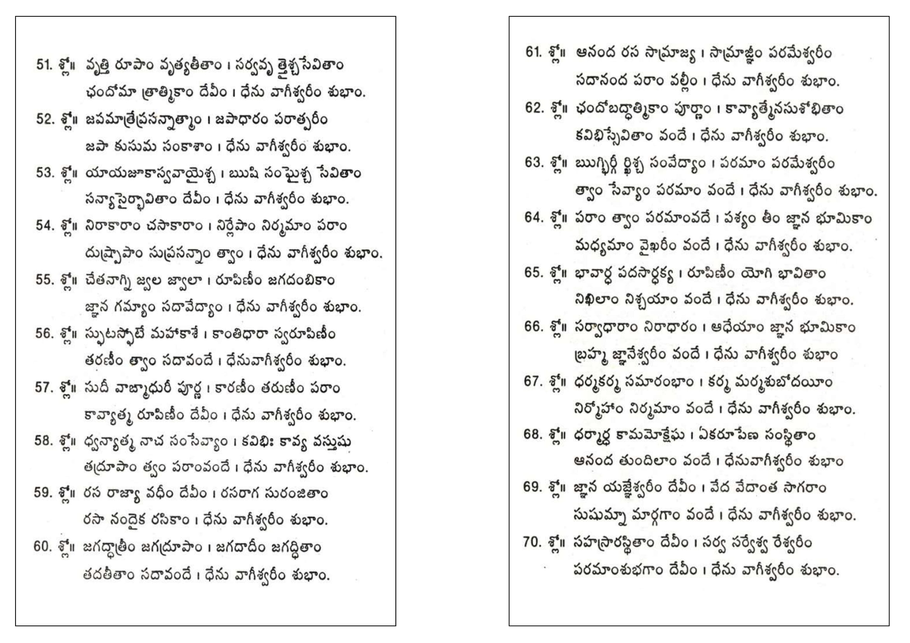
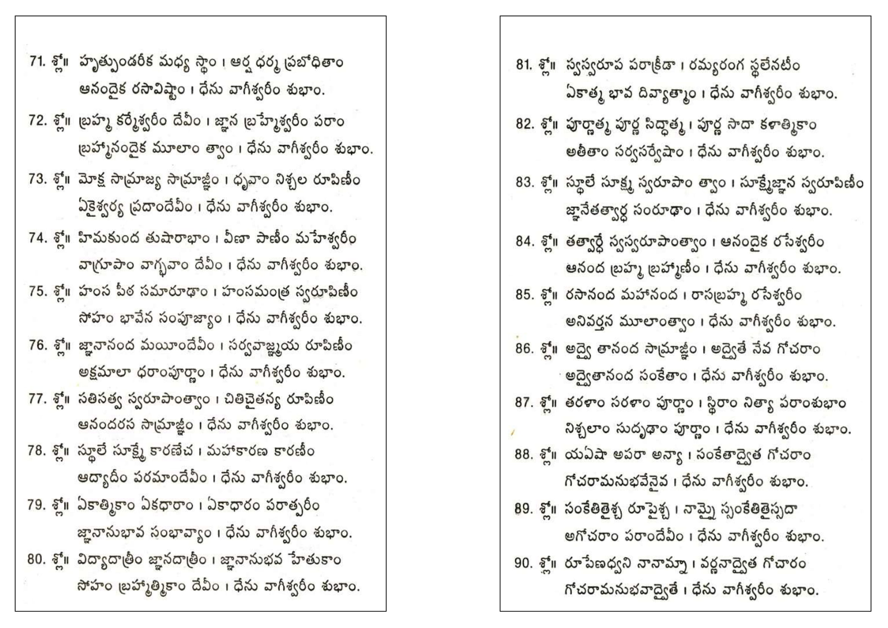
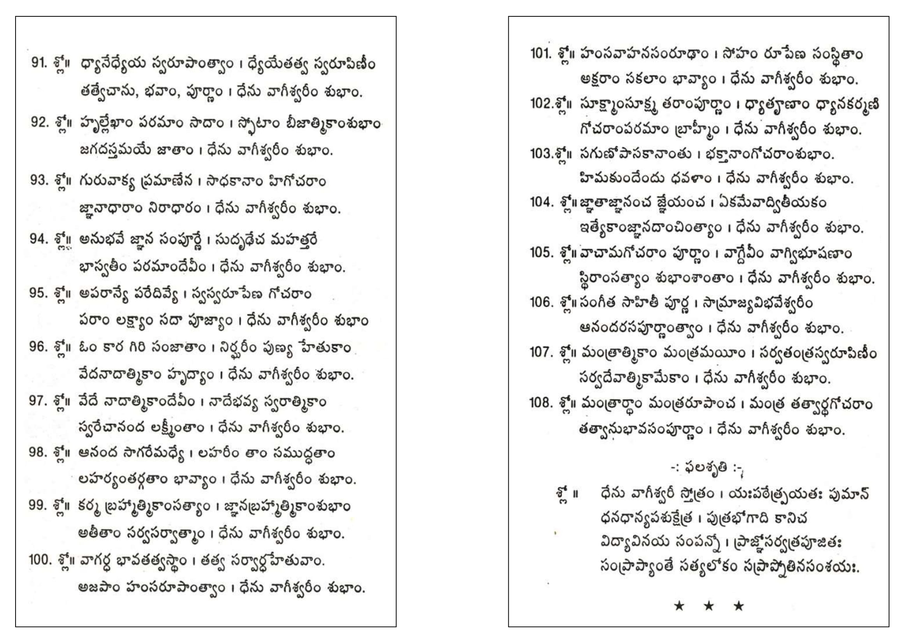
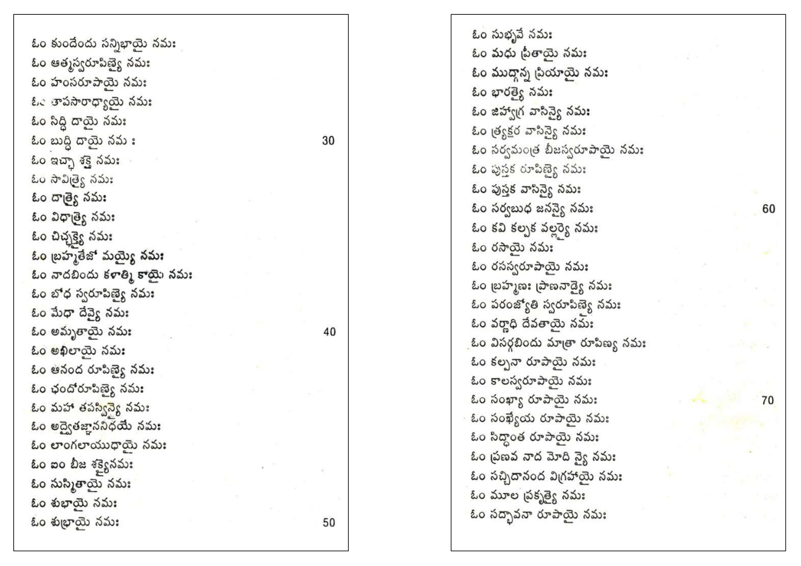
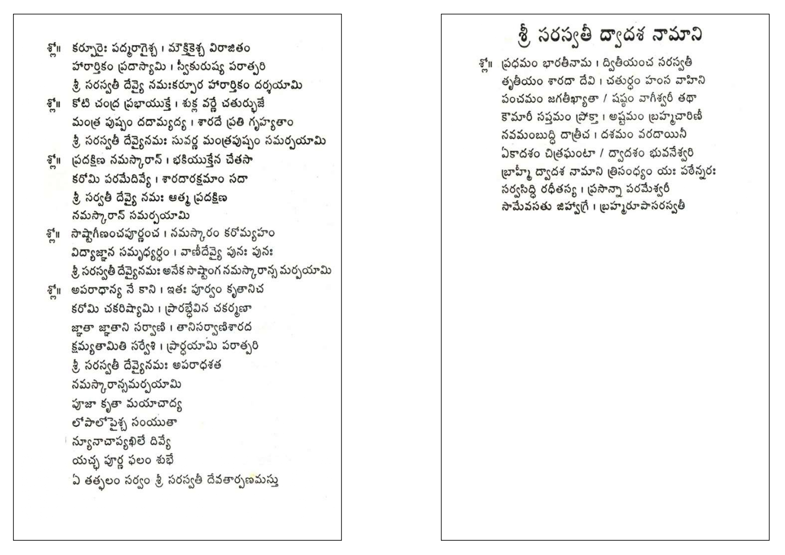

Siddha Astro • Publications
Dhenuvageshwari Shatakam
Read the complete work page by page in a clean, mobile-friendly reader.
Use your browser's normal pinch-to-zoom or double-tap gestures to read the pages comfortably on mobile.






